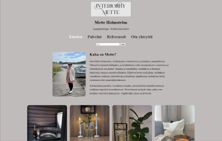

Websivun kehittäminen kurssi
Kurssilla pääsin rakentamaan vapaavalintaisesta aiheesta yksinkertaisen nettisivun HTML JA CSS- menetelmiä käyttäen.
Opin rakentamaan monisivuisen verkkosivuston HTML:llä ja CSS:llä sekä suunnittelemaan sen rakennetta ja ulkoasua

Tutustu verkkosivustoon